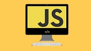

TRANSFORMANDO CÓDIGOS EM SONHOS
COMO UM SITE PODE AJUDAR SUA EMPRESA?
A presença digital de uma empresa já deixou há muito tempo de ser algo opcional para ser algo que, na maioria dos casos, é uma das primeiras etapas obrigatórias da abertuda de uma empresa. Atualmente, uma empresa que não possui um site levanta questões sobre a sua existência e legitimidade. Por tanto, vamos ver os benefícios e as opções de como ter um site rapidamente no ar com baixo custo!
1. Garante mais credibilidade.
2. Abre um Novo Horizonte de Divulgação.
3. Facilita a Implementação de Estratégias de Marketing Digital.
4. Permite Organizar os Serviços de sua Empresa.
5. Cria um Novo Canal de Comunicação.
MARKETING DIGITAL
-
MARKETING DIGITAL:
O QUE É, TIPOS E TUDO SOBRE.
A primeira coisa que você precisa saber sobre o marketing digital é que ele não é uma ciência própria. Marketing digital não existe sem MARKETING. Existem estratégias e ações específicas para o ambiente online, mas tudo isso parte de conceitos comuns ao ambiante offline. Como PLANEJAMENTO DE MARKETING, branding, e pesquisa, muita pesquisa. E aqui eu irei continuar o meu texto até ele ficar no mesmo tamanho que os demais .
Sobre

Leonardo Possan
Admirador de WEB site, praticando a programação há dois anos. Buscando aprimorar a cada dia mais meus conhecimentos, para ter uma carreira de sucesso atuando na área sonhada e amada.
Conheci melhor a área de programação no ano de 2018, e a partir de então tive a certeza que queria praticar o mesmo para o resto de minha vida. Criar uma vida digital para as empresas.
Por que trabalho com web
Acredito que qualquer empresa atualmente precisa de uma boa estratégia de marketing digital para sobreviver em um mercado cada vez mais restrito e concorrido.
A profissão que escolhi, me ensinou que, assim como a FORMULAÇÃO DE UMA DROGA, em que todos os componentes tem sua medida e peso EXATOS, pois, essa fórmula, se conter menos princípio ATIVO, não cura, se conter mais, causa dano. Assim como a VIDA: nem mais, nem menos. Tudo na medida EXATA! Sem nunca esquecer que eu sou o PRINCÍPIO ATIVO de minha vida.
Acreditando que tudo é possível para aqueles que buscam e se esforçam, decidi me aprofundar a cada dia mais, para conquistar meu espaço no mundo da TECNOLOGIA.
"Escolha um trabalho que você ama e você nunca terá que trabalhar um dia sequer na vida", já dizia o filósofo Confúcio e... Não é para menos! Quando escolhemos uma profissão que amamos, encontramos juntamente mais motivação e prazer em executar as atividades propostas. Embora o trabalho seja a nossa principal renda e a melhor maneira de conseguir a independência financeira, ele não precisa ser exaustivo e monótono, pode ser feito com paixão e muita disposição!
Formação profissional
- GRADUAÇÃO - CST ANÁLISE E DESENVOLVIMENTO DE SISTEMAS WEB - DISTÂNCIA - UNINTER.
Áreas de conhecimento
- Lógica de programação
- HTML e CSS
- JAVASCRIPT 